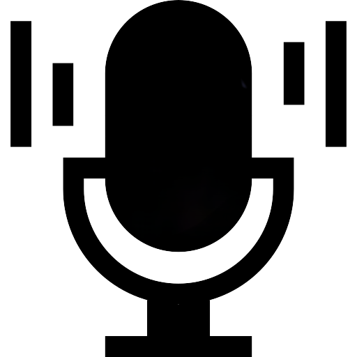
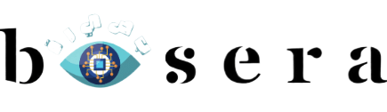

Basera
أهلا بك في بصيرة
منصة الكترونية تساعد ذوي الاعاقة البصرية فحص الروابط للتأكد من سلامتها
فحص الروابط
منصات تدعم ذوي الاعاقة البصرية
فحص الروابط
منصات تدعم ذوي الاعاقة البصرية
عودة إلى القائمة الرئيسية
Notification
Your message here.